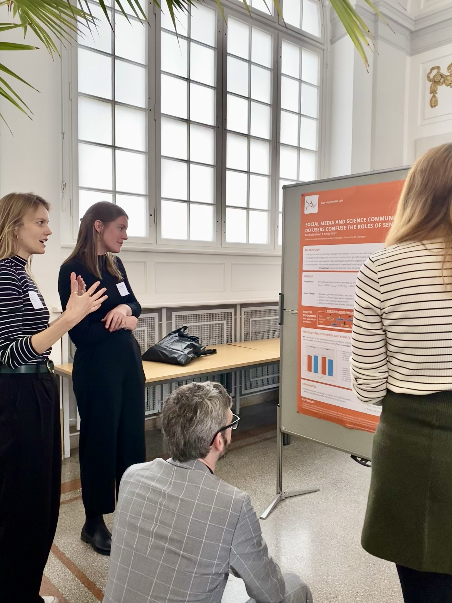
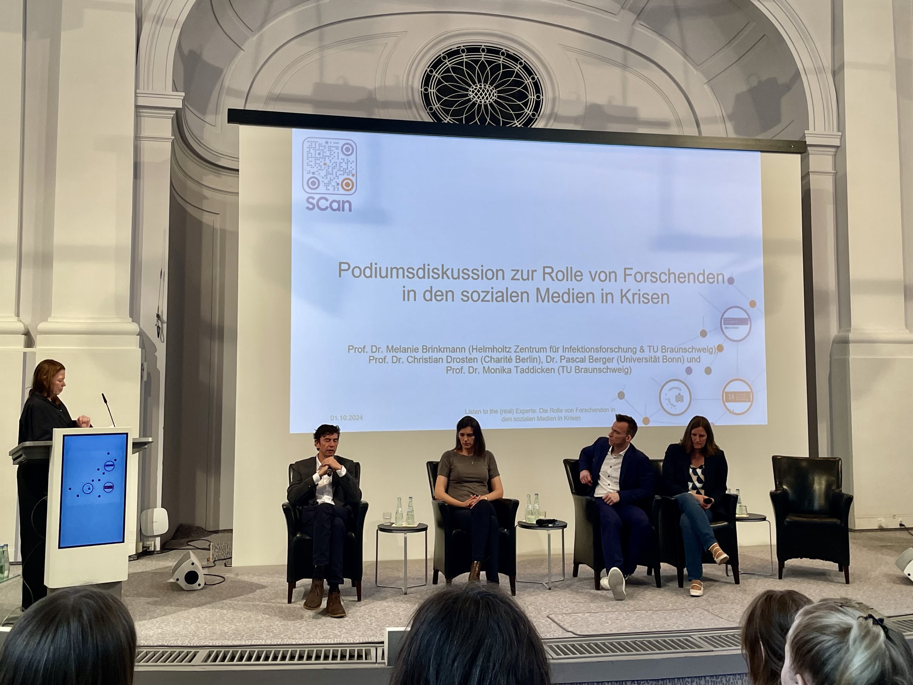

2025
09.09 - 12.09.2025 CheckThat! Lab at CLEF 2025, Madrid
Presentation of results the results from two tasks on scientific web discourse
The CheckThat! lab on scientific web discourse, focused on two tasks: Scientific Web Discourse Detection and scientific
claim source retrieval. On-site sessions will include tasks and poster presentations by participating teams.
2024
01.10.2024 Listen to
the (real) experts: The Role of Scientists on Social Media in Crises
Poster presentation by Eva Rudholzer - Social Media and Science Communication - Do Users Confuse the Roles of Senders?
The DFG-Project 'Science Communication during Pandemics and the Role of Public Engagement' ('SCan') focused
on science communication during the Covid-19 pandemic. The following questions were investigated using
an interdisciplinary approach:
- What and how do scientific experts communicate on social media?
- What kind of comments and reactions did their communication trigger and what effect did it have?
- To what extent can people on social media distinguish between real and apparent experts?
Besides the presentations of the project's research findings and a poster session, the closing event
included a discussion with German virologists Christian Drosten and Melanie Brinkmann.
Eva Rudholzer presented the results from her first online experiment in the poster session, which focused
on whether social media users confuse the roles of different senders talking about science.


03.06 - 04.06.2024 Spring Meeting
Working group Democracy, DeGEval in cooperation with the project PrEval Zukunfswerkstätten
Talk by Dr.Dimitar Dimitrov - AI methods for detecting and understanding scientific/health online discourse
The conference focused on the questions whether AI can support the promotion of democracy and how it can be
used for its evaluation. Main goal of the meeting was to carve out which new opportunities AI offers for
evaluation and democracy while taking the possible risks into account.
13.05 - 17.05.2024: Beyond Facts 2024 Co-Chairs: Prof. Dr. Stefan Dietze,
Dr.Dimitar Dimitrov, Singapore,
collocated with The Web Conference 2024
Computational methods working on online discourse require an interdisciplinary approach combining research fields
like communication studies, social science, computational linguistics and computer science. The Beyond Facts workshop intends
to strengthen the exchange and relation between these fields, while providing a forum for discussing the
modeling, extraction and analysis of online discourse.